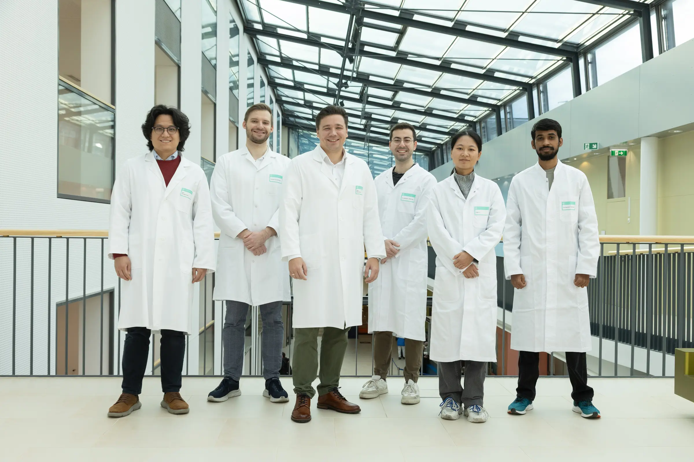
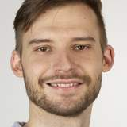
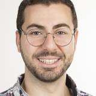
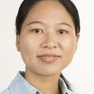
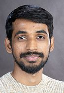
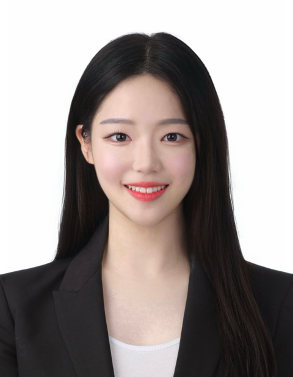
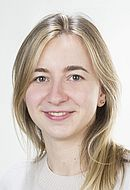
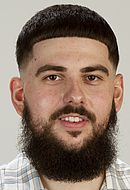
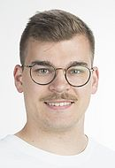

Artificial intelligence and multimodal dental data
We apply and evaluate machine-learning methods for dental imaging, surface data, functional measurements, clinical information, and multimodal datasets.
Competence Center Artificial Intelligence in Dentistry
Connecting clinical questions with computational approaches in dentistry.
We bring methodological and clinical perspectives together within one interdisciplinary team. Our research uses, adapts, and further develops approaches in artificial intelligence, computational modeling, and digital dentistry in response to clinically relevant questions.

Research overview
Strong methodological research and strong clinical research often develop in separate environments. Our ambition is to connect these perspectives within one team and move directly between clinical questions, quantitative analysis, and computational investigation.
Based at the University Clinic of Dentistry, we combine access to clinical expertise and data with experience in AI, biomechanics, imaging, and digital measurement. Across all three research areas, we emphasize scientific rigor, reproducibility, and relevance to dental research and care.
Research areas
We apply and evaluate machine-learning methods for dental imaging, surface data, functional measurements, clinical information, and multimodal datasets.
We combine biomechanical simulation and data-driven modeling to study anatomy, joint loading, motor control, and treatment effects.
We develop quantitative approaches for evaluating dental structures, movements, materials, restorations, and treatment performance.
Selected research
Patient-specific computational models, machine learning, and motor-control simulation are used to investigate how anatomical sex differences influence temporomandibular joint loading and TMD risk.
Explainable artificial intelligence is being developed to classify and interpret mandibular kinematics from jaw-motion data, supporting TMD research and future clinical decision-making.
This ten-year clinical study evaluates custom-made monolithic restorations manufactured from Zolid Gen-X (4Y-TZP) and Zolid Bion (4Y-/5Y-TZP) across multiple dental indications. Complementary micro-CT and materials-testing studies investigate their structural and mechanical performance.
Open-source research Selected code and research tools are available on GitHub.
Publications
Recent work from the group and its collaborators across computational modeling, imaging, and digital dentistry.
Aftabi H, Lloyd JE, Ding A, Sagl B, Prisman E, Hodgson A, Fels S · Medical Image Analysis · accepted
Ahmadi F, Sun S, Zhao J, Chen J, Wilson MB, Damon B, Wu Y, Almpani K, Chung R, Jani P, Chen P, Slate EH, Lee JS, Sagl B, Yao H · Annals of Biomedical Engineering
Schwärzler A, Domic D, Panwinkler S, Chitan P, Sagl B, Jonke E · Frontiers in Oral Health · 7:1834583
People
We bring together researchers with backgrounds in dentistry, biomedical engineering, physics, artificial intelligence, and data science.

Group Head

PhD Student
Healthcare and Rehabilitation Technology
PhD Student
Dentistry

PhD Student
Data Science

PhD Student
Dentistry

PhD Student
Data Science

PhD Student
Artificial Intelligence Applications and Innovation

PhD Student
Physics

PhD Student
Dentistry

MSc Student
Biomedical Engineering
Latest news
Collaborations
Our work is supported by academic and industry collaborations.
Clemson University and Medical University of South Carolina
University of Saskatchewan
University of British Columbia
University of Bath
Austria
Opportunities
We do not currently have a funded position advertised, but welcome inquiries from prospective doctoral and postdoctoral researchers whose interests closely align with our research areas. Formally advertised positions will be posted here.
Contact
Competence Center Artificial Intelligence in Dentistry
University Clinic of Dentistry · Medical University of Vienna
Sensengasse 2a · 1090 Vienna · Austria